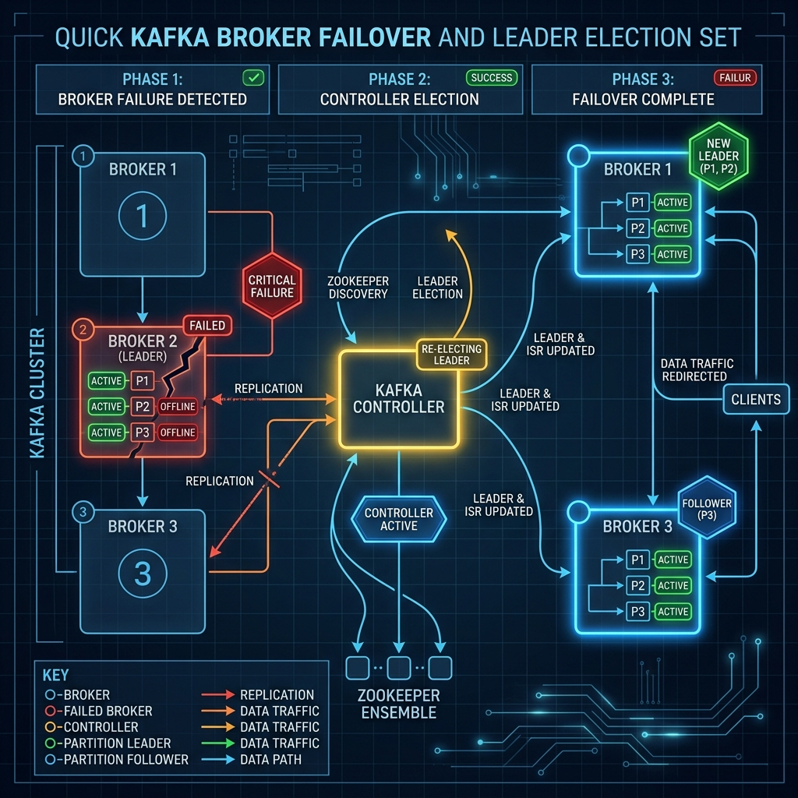

In a distributed system, hardware crashes are not a matter of "if" but "when." Apache Kafka is designed from the ground up to handle broker failures gracefully. When a broker crashes, the cluster automatically repairs itself in real time with minimal disruption.
But what actually happens behind the scenes when a broker goes offline? Let's trace the step-by-step failover process of how Kafka detects the crash, elects new leaders, and redirects network traffic.

Imagine a factory assembly line with multiple stations, each managed by a team lead. Suddenly, the Lead of Station A slips and has to leave for the hospital.
The factory coordinator immediately notices their absence, checks their list of qualified backups, and appoints a new Lead for Station A from the crew. The workers and delivery drivers are notified of the change and start asking the new Lead for instructions. The assembly line keeps moving with barely a pause.
Step-by-Step Failover Sequence
Step 1: Failure Detection
Brokers continuously send heartbeat pings to the active cluster coordinator (managed by ZooKeeper or the KRaft quorum). If a broker crashes or fails to send a heartbeat within the timeout window, the coordinator marks that broker as offline.
Step 2: In-Sync Replica (ISR) Update
For any partitions where the crashed broker was a follower, no leader election is necessary. The leader simply shrinks its In-Sync Replicas (ISR) pool by removing the failed broker. Replicas drop, and the cluster administrator is alerted of under-replicated partitions.
Step 3: Leader Election
For any partitions where the crashed broker was the active leader, the cluster controller elects a new leader. The controller scans the partition's active ISR list and selects a new leader (typically the next follower listed in the metadata configuration).
Step 4: Client Redirection
Producers and consumers sending data to the crashed leader will experience brief timeouts. However, the Kafka client libraries automatically handle this: they request updated cluster metadata from any remaining online broker, learn who the new partition leader is, and seamlessly redirect all future reads and writes to the new node.
Step 5: Recovery and Catch-up
When the crashed broker eventually boots back up and rejoins the cluster, it does not immediately become leader. It joins as a follower. It compares its local log files with the active leader, truncates any uncommitted data, and copies missing records. Once it catches up completely, it rejoins the ISR registry.
Conclusion
Kafka's resilient architecture turns server crashes into minor, self-healing events. By delegating metadata monitoring to a coordinator, decoupling client connections, and executing fast leader elections, Kafka ensures high availability for your production streaming applications.